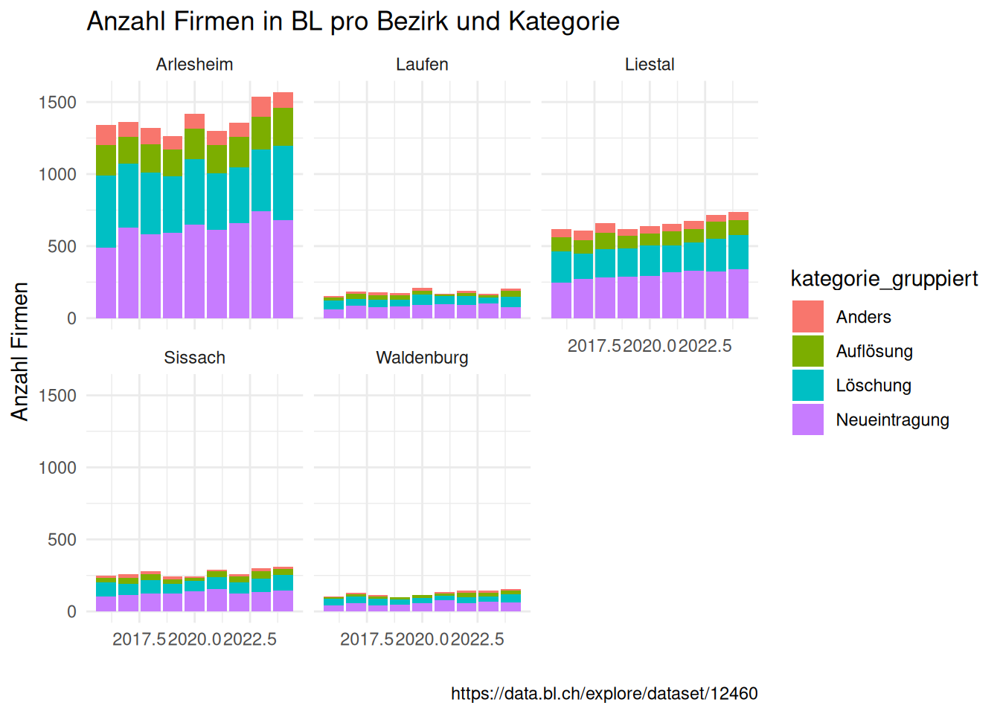
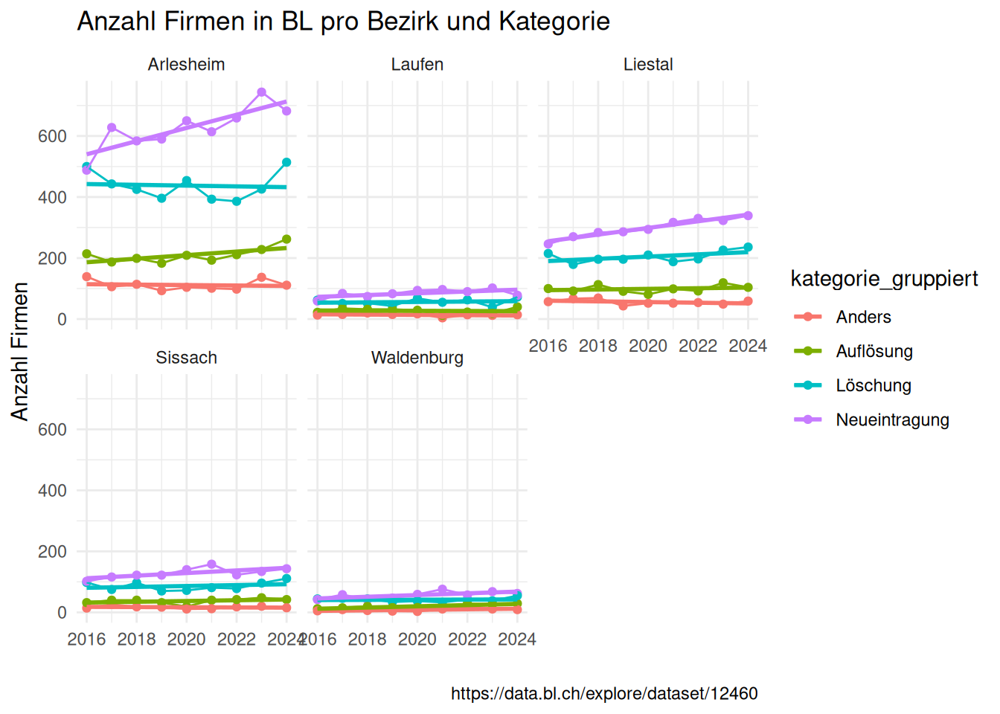

library(janitor)
library(tidyverse)Praktikum 4b - Daten zusammenfügen
Tastaturkürzel
| Einen neuen Code-chunk hinzufügen | Ctrl + Alt + I |
| Code “Zeile für Zeile” innerhalb eines Code-chunks ausführen | Ctrl + Enter |
| Den gesamten Code-chunk ausführen | Ctrl + Shift + Enter |
| (Aus-)kommentieren | Ctrl + Shift + C |
Das Pipe |> |
Ctrl + Shift + M |
Der Zuweisungs-Operator <- |
Alt + - |
Packages laden
- Lädt die
janitorundtidyversepackages.
Daten laden
- Lädt die Firmendaten, die zuvor aus dem OGD-Portal heruntergeladen und für diese Übung bereinigt wurden. Dieser Datensatz enthält tägliche Meldungen aus dem Schweizerischen Handelsamtsblatt (SHAB).
firmen <- read_csv("data/ogd_12460_firmen_clean.csv")Daten erkunden
glimpse(firmen)Rows: 23,770
Columns: 14
$ jahr <dbl> 2025, 2025, 2025, 2025, 2025, 2025, 2025, 2025, 20…
$ kategorie <chr> "Widerruf der Auflösung", "Neueintragung", "Löschu…
$ kategorie_gruppiert <chr> "Anders", "Neueintragung", "Löschung", "Löschung",…
$ firmensitz_code <dbl> 2831, 2831, 2770, 2770, 2775, 2763, 2828, 2831, 27…
$ firmensitz <chr> "Pratteln", "Pratteln", "Muttenz", "Muttenz", "The…
$ uid <chr> "CHE114900844", "CHE175812531", "CHE131395143", "C…
$ firmenname <chr> "Flipp GmbH in Liquidation", "Alaia Beauty GmbH", …
$ rechtsform_code <chr> "0107", "0107", "0101", "0101", "0101", "0107", "0…
$ rechtsform <chr> "Gesellschaft mit beschränkter Haftung (GmbH)", "G…
$ noga_code <chr> "181201", "960202", "432100", "692000", "329900", …
$ noga <chr> "Offsetdruck", "Kosmetiksalons", "Elektroinstallat…
$ noga_abschnitt_code <chr> "C", "S", "F", "M", "C", "G", "S", "L", "S", "U", …
$ noga_abschnitt <chr> "VERARBEITENDES GEWERBE/HERSTELLUNG VON WAREN", "E…
$ noga_abteilung <chr> "Herstellung von Druckerzeugnissen; Vervielfältigu…summary(firmen) jahr kategorie kategorie_gruppiert firmensitz_code
Min. :2016 Length:23770 Length:23770 Min. :2761
1st Qu.:2018 Class :character Class :character 1st Qu.:2767
Median :2020 Mode :character Mode :character Median :2773
Mean :2020 Mean :2799
3rd Qu.:2023 3rd Qu.:2829
Max. :2025 Max. :2895
firmensitz uid firmenname rechtsform_code
Length:23770 Length:23770 Length:23770 Length:23770
Class :character Class :character Class :character Class :character
Mode :character Mode :character Mode :character Mode :character
rechtsform noga_code noga noga_abschnitt_code
Length:23770 Length:23770 Length:23770 Length:23770
Class :character Class :character Class :character Class :character
Mode :character Mode :character Mode :character Mode :character
noga_abschnitt noga_abteilung
Length:23770 Length:23770
Class :character Class :character
Mode :character Mode :character
- Wie viele verschiedene Kategorien gibt es?
firmen |> count(kategorie_gruppiert, sort = TRUE)# A tibble: 4 × 2
kategorie_gruppiert n
<chr> <int>
1 Neueintragung 10843
2 Löschung 7491
3 Auflösung 3566
4 Anders 1870- Welche Jahre sind abgedeckt?
firmen |>
distinct(jahr) |>
arrange(jahr)# A tibble: 10 × 1
jahr
<dbl>
1 2016
2 2017
3 2018
4 2019
5 2020
6 2021
7 2022
8 2023
9 2024
10 2025Bezirksdaten zusammenfügen
Wir möchten die Trends der Firmen pro Jahr und Bezirk in BL analysieren. Dafür sollten wir zuerst die Bezirksdaten einfügen.
- Lest die Raumgliedrungsdaten:
raumgliederung <- read_delim("data/ogd-10110-raumgliederung.csv", delim = ";")
glimpse(raumgliederung)Rows: 86
Columns: 34
$ BFS_Nummer <dbl> 2761, 2762, 2763, 2764, 2765…
$ Gemeinde <chr> "Aesch (BL)", "Allschwil", "…
$ Bezirk_Nummer <dbl> 1301, 1301, 1301, 1301, 1301…
$ Bezirk <chr> "Arlesheim", "Arlesheim", "A…
$ Grossregion_Code <dbl> 3, 3, 3, 3, 3, 3, 3, 3, 3, 3…
$ Grossregion <chr> "Nordwestschweiz", "Nordwest…
$ Agglomeration_2020_Code <dbl> 2701, 2701, 2701, 2701, 2701…
$ Agglomeration_2020 <chr> "Basel (CH)", "Basel (CH)", …
$ Agglomerationsgrössenklasse_2020_Code <dbl> 1, 1, 1, 1, 1, 1, 1, 1, 1, 1…
$ Agglomerationsgrössenklasse_2020 <chr> ">= 500'000 Einwohner/innen"…
$ Städtischer_Charakter_2020_Code <dbl> 2, 2, 2, 2, 2, 2, 2, 4, 2, 2…
$ Städtischer_Charakter_2020 <chr> "Agglomerationskerngemeinde …
$ Statistische_Stadt_2020_Code <dbl> 1, 1, 1, 0, 1, 1, 0, 0, 1, 1…
$ Statistische_Stadt_2020 <chr> "Ja", "Ja", "Ja", "Nein", "J…
$ Städtisch_Ländlich_2020_Code <dbl> 1, 1, 1, 1, 1, 1, 1, 2, 1, 1…
$ Städtisch_Ländlich_2020 <chr> "Städtisch", "Städtisch", "S…
$ Gemeindetypologie_2020_9_Code <dbl> 11, 11, 11, 11, 11, 11, 11, …
$ Gemeindetypologie_2020_9 <chr> "Städtische Gemeinde einer g…
$ Gemeindetypologie_2020_25_Code <dbl> 112, 112, 112, 113, 113, 113…
$ Gemeindetypologie_2020_25 <chr> "Städtische Arbeitsplatzgeme…
$ Arbeitsmarktgrossregion_2018_Code <chr> "08", "08", "08", "08", "08"…
$ Arbeitsmarktgrossregion_2018 <chr> "Region Basel", "Region Base…
$ Arbeitsmarktregion_2018_Code <chr> "08012", "08012", "08012", "…
$ Arbeitsmarktregion_2018 <chr> "Reinach (BL) - Allschwil", …
$ Berggebiet_2019_Code <dbl> 0, 0, 0, 0, 0, 0, 0, 0, 0, 0…
$ Berggebiet_2019 <chr> "Nein", "Nein", "Nein", "Nei…
$ Urbanisierungsgrad_2011_Code <dbl> 1, 1, 1, 2, 1, 1, 1, 2, 1, 1…
$ Urbanisierungsgrad_2011 <chr> "Dichtbesiedeltes Gebiet", "…
$ Erweiterte_Stadt_2011_Code <dbl> 2701950, 2701950, 2701950, 0…
$ Erweiterte_Stadt_2011 <chr> "Basel: erweiterte Stadt", "…
$ Funktionales_städtisches_Gebiet_2014_Code <dbl> 2701960, 2701960, 2701960, 2…
$ Funktionales_städtisches_Gebiet_2014 <chr> "Basel: funktionales städtis…
$ Geometrie <chr> "{\"coordinates\": [[[[7.567…
$ Geometrisches_Zentrum <chr> "47.473950622, 7.585373859",…- Bereinigt die Namen und behaltet nur die vier ersten Spalten (
bfs_nummer,gemeinde,bezirk_nummer,bezirk):
raumgliederung <- raumgliederung |>
clean_names() |>
select(1:4)
glimpse(raumgliederung)Rows: 86
Columns: 4
$ bfs_nummer <dbl> 2761, 2762, 2763, 2764, 2765, 2766, 2767, 2768, 2769, 27…
$ gemeinde <chr> "Aesch (BL)", "Allschwil", "Arlesheim", "Biel-Benken", "…
$ bezirk_nummer <dbl> 1301, 1301, 1301, 1301, 1301, 1301, 1301, 1301, 1301, 13…
$ bezirk <chr> "Arlesheim", "Arlesheim", "Arlesheim", "Arlesheim", "Arl…- Verknüpft die Bezirksdaten mit dem Unternehmensdatensatz und verwendet dabei die folgenden Spalten als Schlüssel:
firmensitz_code == bfs_nummer,firmensitz == gemeinde:
firmen_joined <- firmen |>
left_join(y = raumgliederung, join_by(firmensitz_code == bfs_nummer, firmensitz == gemeinde)) |>
relocate(starts_with("bezirk"), .after = firmensitz)
glimpse(firmen_joined)Rows: 23,770
Columns: 16
$ jahr <dbl> 2025, 2025, 2025, 2025, 2025, 2025, 2025, 2025, 20…
$ kategorie <chr> "Widerruf der Auflösung", "Neueintragung", "Löschu…
$ kategorie_gruppiert <chr> "Anders", "Neueintragung", "Löschung", "Löschung",…
$ firmensitz_code <dbl> 2831, 2831, 2770, 2770, 2775, 2763, 2828, 2831, 27…
$ firmensitz <chr> "Pratteln", "Pratteln", "Muttenz", "Muttenz", "The…
$ bezirk_nummer <dbl> 1303, 1303, 1301, 1301, 1301, 1301, 1303, 1303, 13…
$ bezirk <chr> "Liestal", "Liestal", "Arlesheim", "Arlesheim", "A…
$ uid <chr> "CHE114900844", "CHE175812531", "CHE131395143", "C…
$ firmenname <chr> "Flipp GmbH in Liquidation", "Alaia Beauty GmbH", …
$ rechtsform_code <chr> "0107", "0107", "0101", "0101", "0101", "0107", "0…
$ rechtsform <chr> "Gesellschaft mit beschränkter Haftung (GmbH)", "G…
$ noga_code <chr> "181201", "960202", "432100", "692000", "329900", …
$ noga <chr> "Offsetdruck", "Kosmetiksalons", "Elektroinstallat…
$ noga_abschnitt_code <chr> "C", "S", "F", "M", "C", "G", "S", "L", "S", "U", …
$ noga_abschnitt <chr> "VERARBEITENDES GEWERBE/HERSTELLUNG VON WAREN", "E…
$ noga_abteilung <chr> "Herstellung von Druckerzeugnissen; Vervielfältigu…Visualisierung
Barplot
- Behaltet nur Jahre bis und mit 2024
- Erstellt ein Balkendiagram der Anzahl von Firmen pro Kategorie, Jahr und Bezirk
# Pro Bezirk, bar plot
firmen_joined |>
filter(jahr != 2025) |>
ggplot(aes(x = jahr, fill = kategorie_gruppiert)) +
geom_bar() +
facet_wrap(~bezirk) +
theme_minimal() +
labs(
x = "",
y = "Anzahl Firmen",
title = "Anzahl Firmen in BL pro Bezirk und Kategorie",
caption = "https://data.bl.ch/explore/dataset/12460"
)
Liniendiagramm
- Behaltet nur Jahre bis und mit 2024
- Verwendet
summarise()um die Anzahl von Firmen pro Jahr, Bezirk und gruppierte Kategorien zu berechnen - Erstellt ein Liniendiagram der Anzahl von Firmen pro Kategorie, Jahr und Bezirk
# Pro Bezirk, line plot
firmen_joined |>
filter(jahr != 2025) |>
summarise(n = n(), .by = c(jahr, kategorie_gruppiert, bezirk)) |>
ggplot(aes(x = jahr, y = n, colour = kategorie_gruppiert)) +
geom_point() +
geom_line() +
geom_smooth(method = "lm", se = FALSE) +
facet_wrap(~bezirk) +
theme_minimal() +
labs(
x = "",
y = "Anzahl Firmen",
title = "Anzahl Firmen in BL pro Bezirk und Kategorie",
caption = "https://data.bl.ch/explore/dataset/12460"
)